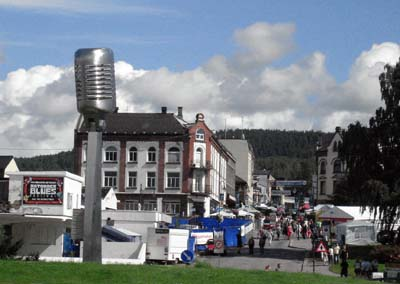
С 4 по 7 августа в маленьком норвежском городе Нотодден прошел очередной гигантский блюзовый Notodden Blues Festival. Свои поездки туда я время от времени начиная с 98-го года, описывал в статьях на blues.ru. После некоторого перерыва, который можно объяснить, в частности, неудовлетворенностью программой и общим пресыщением, я решил съездить на фестиваль снова, ибо в программе на этот раз были весьма интересные для меня музыканты.Для меня отчет о фестивале помимо неизбежно краткого доклада про "кто был" и "что по мне - хорошо, а что - плохо", главным образом - повод поупражнять аналитическую часть мозга. Хорошие музыканты вызывают разряды в спинном мозге и эмоции с эстетским уклоном, зато плохие дают больше пищи для ума, заставляя крепко задуматься, почему же у них со мной не получается ни первое, ни второе? Причем, как по Толстому, на хороших эпитетов не хватает, как и у авторов восторженных пресс-релизов, а плохие - разнообразны в своем несовершенстве. Писать про них - тема благодатная, хоть это и не справедливо.
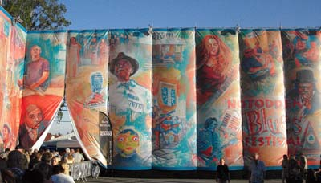
Предъюбилейный 24-й, а для меня - 9-й, Notodden Blues Festival 2011, чтобы накопить побольше денег на юбилей в 2012-м, должен был переломить послекризисную ситуацию последних лет, когда он уходил в минус. Для этого организаторы пошли на сокращение количества и укрупнение концертных площадок. Пишут, что этот номер вполне удался: хотя концертов и музыкантов на фестивале было меньше, людей было больше. Для меня с моим потребительским отношением ситуация при этом не ухудшилась, и в программе 2011 было больше интересного, чем в 2010-м. Хотя, конечно, был меньше выбор из вечерних концертов проходивших одновременно.Чтобы быстрее продавать свое дорогущее пиво на концертах, фестиваль ввел систему Cashless. Деньги полностью отменили как при коммунизме, вместо них использовали специальные пиво-устойчивые непромокаемые карточки ("каждому по потребностям"), которые изредка нужно было заряжать от банковских в специальных точках ("от каждого по способностям"). В результате норвежское пиво из бочек текло рекой, поддерживая американский блюз живым (keeping blues alive!).
Норвегия в эти дни много внимания уделяет народному единению после страшных терактов в Осло, засыпанном сейчас засохшими цветами. В городе в центре практически любая выпуклость использовалась для того, чтобы возложить цветы и расставить свечки. На фестивале про теракт, конечно, говорили больше обычного и усилили охрану на концертах. Улыбчивые секьюрити-девушки каждый раз обыскивали всех входящих. В остальном - ничего не изменилось.
На открытии фестиваля с речью выступил министр культуры - дама, которая сойдя со сцены тут же отправилась за пивом и затем присоединилась к своему мужчине в толпе с тем, чтобы послушать музыку. Она же объявила очередного победителя норвежского Bluesprissen, которым, как я почему-то заранее догадался, стал американский норвежский Кид Андресен. Вслед за этим Арт Типальди вручил фестивалю приз за лучший интернациональный блюзовый фестиваль 2011.
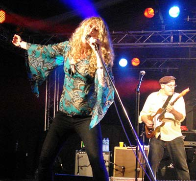
Dana FuchsПервый концерт на фестивале дала певица Дана Фьюкс, она поет эмоциональный до чрезвычайности соул-блюз-рок, в чем ей помогает напарник в кепке, играющий очень-очень забойно на своей гитаре. Сама Дана - голливудская актриса по-совместительству, очень хорошо выглядит, этого не стыдится и дает публике себя рассмотреть. У Даны образ просветленной девушки, не выходящей из состояния катарсиса ни на секунду. Она говорит, что не разбирается в мировых религиях, ей все равно, кто ты, христианин, буддист или мусульманин, но почерпнув энергию от зрителей из зала, она лучше построит на сцене настоящий храм любви. Все это шоу очень хорошо выглядит, в музыке много мяса, но целом, конечно, мне было немного скучновато.
Следующим номером должен был выступать Роберт Крей со своей группой. По центру перед сценой чуть заранее собрались внесколькером молодые люди - совершенно нетипичные зрители для блюзового фестиваля, где обычно веселятся занудные и нетрезвые их родители. Обычно это означает, что предстоит выступление какого-нибудь крутого гитариста, на которого собрались посмотреть молодые фанаты-гитаристы-же. В остальном на фестивале молодежи делать нечего, местные, что не смогли сбежать из города на время фестиваля, прячутся на бензоколонке, не в силах выносить это немодное нашествие "шнурков".
Я обменялся парой фраз с моим соседом по концерту Крея, он спросил, откуда я? Когда я сказал, что из России, он похвастался, что там играл прошлой осенью. А я похвастался, что организовал ему этот концерт. Молодым человеком оказался наш друг Борни. ;)
Концерт Роберта Крея (Mr.Blue) поразил меня с самого начала песнями, аранжировками, гитарой и голосом Крея, а также уровнем его группы. Более круто сделанную музыку в блюзе я не помню, когда слышал. Крея не интересовало ничего, кроме того, чтобы наилучшим образом сыграть сочиненную им музыку. Он менял стратокастеры после каждой песни, видимо, чтобы они были постоянно сухие и настроенные.
Его экстремистский подход - сконцентрироваться исключительно на музыке - был выражен во всем. Крей весь концерт стоял на месте, немного позади сцены, чуть дальше, чем остальные музыканты. Он был сдержан, ни разу не кричал "я хочу видеть ваши руки", перед следующей песней говорил "Like this" (а как вам это?).
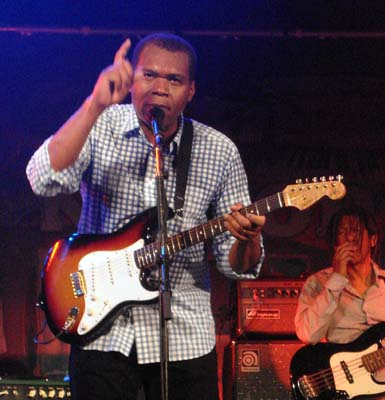
Было понятно, что он разговаривал с публикой на музыкальном языке. Для него главными были песни, которые он сочинил и сыграл. Не было вообще никакой необходимости заводить публику экспрессивным поведением. Только музыка! При этом мурашки по спине бегали по-настоящему, а градус в зале был запредельный.В язык Крея входит безукоризненный тайминг. Когда он абсолютно точен, появляется новое измерение и возможности для игры с таймингом. У него точное звукоизвлечение с холодным, чистым звуком. Вибрато, подчеркивающее точное владение звуком, он играл даже на больших аккордах.
Многие его вещи стоит определить как сложный рок. Другие песни Крея имеют серьезный уклон в соул, там основным атрибутом тут является голос Крея, которым он пользуется бесподобно. В целом музыка у него достаточно сложна, он делает свою вещь в блюзе, которая ни на что не похожа. Он использует в песнях стандартной формы необычные для блюза гармонические ходы, уникальные в каждой песне.
В традиционно блюзовых частях он иногда использует необычный прием, когда, скажем, после перехода на IV-ю ступень соло продолжает недолго обыгрывать первую, в результате переход необычно размывается по времени, и возникает раздвоение в голове.
Группа Крея - Jim Pugh (клавиши, Хаммонд орган), его было слушать даже интересней, чем Брюса Каца. Он не доминировал, но у него была самостоятельная партия во всех сложных креевских песнях, не было соло, просто чтобы заполнить дырки. Ударник и басист Tony Braunagel и Richard Cousins - видимо, самые крутые и опытные чуваки, доступные в блюзе.
Крей купил меня с потрохами не только своими талантами, но и отношением к музыке, которое мне глубоко импонирует. После того, как посмотришь 10 раз игру на гитаре за спиной, прослушаешь 100 одинаковых шаффлов или 1000 хучи-кучи-менов, все это mojo перестает работать на меня. Кроме одной вещи - новой для меня крутой музыки в чистом виде и без примочек.
Я заподозрил в Крее за его поведением продуманную позицию. Его интервью (http://tmapr.com/?p=348) на это вполне точно указывает:
"Крей говорит, что нет никакого секрета в (его) успехе, только тяжелая работа по созданию хороших песен."
"Мне хотелось бы верить, в любом случае, что написание песен - вещь, более важная, чем все остальное. Я надеюсь, что мои песни становятся лучше. И я хочу, чтобы основное внимание уделялось песням. Вся фишка в The Robert Cray Band - это то звучание группы, к которому мы вместе стремимся, в противовес бездельнику с гитарой и второстепенными шестерками позади него."
Желаю вам как-нибудь услышать то, что повезло услышать мне. Да здравствует музыка, аминь!
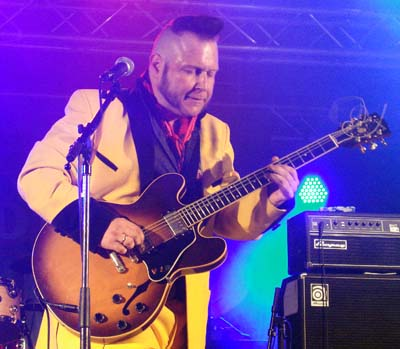
На десерт после горячего в открывающем концерте выступил Видар Бюск. В начале 2011 года Видар снова собрал свою старую группу His True Believers (Arne Rassmussen - гармоника, Rune Endal - бас, он же - главный редактор норвежских Blues News, с ними - Martin Windstad - ударные), с которой он играл свои самые удачные концерты и записывал лучшие пластинки в конце 90-х. Именно эта группа в 98-м году оказала на меня сильнейшее впечатление, что чрезвычайно усилило мой интерес к живому клубному блюзу вообще, спровоцировало на организацию гастролей и регулярные поездки в Нотодден. С тех пор, в основном в процессе этих поездок, помимо отслушивания лучшей американской музыки я занимался спортом "поймать Бюска на хорошем концерте", который временами оборачивался большими удачами. К ним, безусловно, я могу отнести обе московские гастроли. Но среднестатистически по прошествии лет стоит признать, что счет не в мою пользу.Бюска за последние 10 лет стилистически изрядно шатало, и некоторые отдельные разочарования мы связывали с его уходом из low down dirty blues, который прочно ассоциировался с первым составом True Believers. Сейчас сбор старой группы вызывал, как минимум, интерес. И да, на концерте группа была на высоте, хотя, конечно, воспринималась не так ярко, как 10 лет назад в клубе на свежую голову. Ну, сейчас уже меньше вещей по-настоящему вставляет, особенно те, что уже 100 раз слышал. Сам Бюск как гитарист и вокалист в сравнении с собой ранним подкачал, ему очень не хватает воли к победе, поэтому сегодня он играет и поет расслабленно. Это сказывается на его тайминге, ну и просто качестве игры как гитариста.
Песенная форма в новых условиях его несколько мобилизовала, было сильно лучше, чем год назад в игре на гитаре без правил, когда концерт состоял из 5 песен на 15 мин каждая. Однако, Бюск безобразничал больше, чем это необходимо в этих песнях. Накануне, видимо, купил какую-то новую примочку, делающую из гитары "стеклянный" звук, включал регулярно, думая, что это - отличная идея и классное хулиганство.
Все-таки, можно уверенно сказать, что левое полушарие мозга очень важно, чтобы создавать по-настоящему хорошую музыку, гениального правого - совершенно недостаточно. Наличие у Бюска фанатов, которые рады любой его выходке в течение последних 10 лет, мне кажется, сильно усложняет дело. Я думаю, что если бы он осознал ситуацию и постарался, он мог бы гораздо лучше и интереснее играть на гитаре. Сейчас же получился скучноватый камбек в жанре "Смоуки в Москве". Хотите старые песни? Да, пожалуйста, что угодно сыграю, мне по-фигу! Вот так...
Но все же, Видар - талантлив, а в группе у него отличные музыканты, что говорить! Внешность Видара Бюска (Mr.Yellow) весьма переменчива. В рамках светской хроники скажу, что на этот раз он был в желтом костюме, а голова его была как-то особенно рискованно обрита с оставленным полу-коком-полу-ирокезом.
Говорят, где-то они были на фестивале под чужим именем, а я пропустил. Я пару раз раньше бывал, мне скучно, и я что-то не жалею...
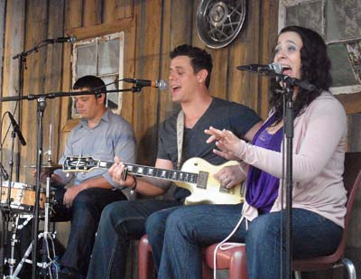
Nick, Chris & Daniel Schnebelen (Trampled Under Foot)Я послушал это братско-сестринское трио из Канзаса на акустической сцене, вечером они должны были выступать на большой сцене под названием Trampled Under Foot. Оставили очень приятное впечатление, они - хорошие музыканты, в акустике играли много кантри-блюза. Сестра Дэниэль хорошо поет, а Ник играет слайдом на гитаре. История получения ими International Blues Challenge Award в новостях блюз.ру за 2008 год.
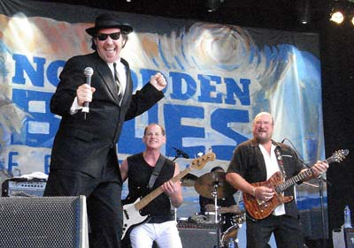
The Original Blues Brothers BandНа Brygga - самой большой сцене на берегу Нотодденского озера устроила свое мега-шоу группа Blues Brothers. По случаю 30-летия фильма собралась и приехала в Нотодден значительная часть музыкантов из старого состава. По-крайней мере, Стив Кроппер на гитаре и музыканты в духовой секции были узнаваемы. Пели, танцевали и вели шоу двое в черных костюмах - Jonny "Rock N' Roll Doctor" Rosch и Bobby "Sweet Soul" Harden. Мне очень понравился Джонни Рош, он очень открыто и сердечно общался с публикой, душевно пел и прыгал по сцене как заведенный. Группа очень узнаваемо исполнила все свои соул-блюзовые хиты на достаточно длинном концерте, чем доставили многочисленным присутствовашим уйму радости и удовольствия.
Гитарист Амунд Морюд - еще одно гениальное дитя норвежского блюза. После приобретения популярности в блюзовой Норвегии в 2002-м и великолепно-искрометного визита в 2003-м в Москву он сменил блюзовую ориентацию на роковую. У Амунда возникла идея использовать свои уникальные гитарные и артистические данные для того, чтобы завоевать популярность у молодежи - той, что в Нотодден ни ногой. Я думаю, что ему в большой степени это удалось, на его концерты приходит гораздо больше людей, чем в блюзовые клубы. Однако, в норвежскую фабрику рок-звезд он не пробился, но и для блюза тоже потерялся на какое-то время. Я с некоторой регулярностью прослушивал его рок-альбомы и концерты, но мне было скучновато, прямо скажем.
Появление на блюзовом фестивале в Нотоддене под оригинальным названием Amund Maarud Band, которое раньше недостаточно круто звучало для рок-молодежи, было интригующим. Группа на концерте выглядела очень впечатляюще: секция из трех духовых, его тоже бородатый брат Хенрик на ударных, новые молодежные клавишник и басист. Сам Амунд (Mr.Red) был в красной как пламя манишке. Концерт был очень забойным, но не в плане тяжести звука, а благодаря фантастическому техническому умению Амунда выжимать из инструмента и группы драйвовые звуки.
Как и раньше концерт был построен на экспрессии главного героя, который полтора часа умирал на сцене. Мне понравились музыкальные идеи и исполнение в 3-4 песнях, это были не блюзы, а рок с фанком. Но в целом было скучновато как и раньше на концертах его постмосковского творческого периода.
И опять же, тут понятно, что дело не в том, что он перестал играть блюз и начал играть рок. Что именно он делал в 2002-2003 году фантастически круто? Он играл 20 разных песен, в каждой из которых была своя музыкальная идея, и он желал представить ее в чистом, выгодном, выкристаллизованном виде. Просто потому, что сам от них перся по-настоящему. Чистый гитарный звук страта был для этого подходящим инструментом, а экспрессия местами - отличным дополнением, чтобы воздействовать на слушателя. В современной версии Амунд раскрашивает иногда бледноватые идеи звуковыми наворотами и примочками: все летает, жужжит, формально, вроде круто. Плюс - непрерывная экспрессия от первой и до последней песни, он страдает на сцене гораздо круче других, отдаю должное. Но это в целом скучно.
Вообще, болезнь гитарного героизма в блюзе стала пандемией с осложнениями для талантливых музыкантов. Я не могу себе представить джазового исполнителя на кларнете, который кривляется, показывает, как его колбасит, и дует весь концерт как можно громче. Да, вы скажете, мол, выразительные средства другие. Но он не станет этого делать хотя бы и потому, что рядом серьезные люди стоят, которые музыку пришли играть. И априори на концерте - музыка интересней, чем его личность.
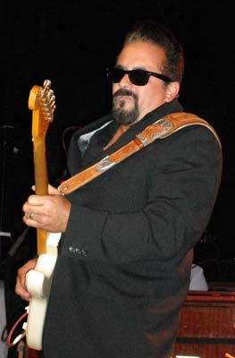
Этот единственный концерт под закрытие фестиваля манил меня в Нотодден в этом году больше других. Концерт Кида Рамоса и, может быть, когда-нибудь, его гастроли в Москве (?!?!), были в моем уже коротком списке неосуществленных блюзовых мечт. Увы, увы, Lynwood Slim, вечный напарник Кида Рамоса, главный голос современного вест-коаст блюза, за 3 дня до концерта заболел так, что это стало несовместимо с его поездкой в Норвегию. Из-за этого концерт отчасти превратился в джем с повышенной долей инструменталов, гитарных соло, и пару раз - не очень подготовленных песен, выбранных на замену.
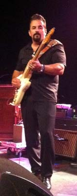
Звездой джема был наш друг Joakim Tinderholt, который, разумеется, был в теме и в стиле, благодаря чему Киду Рамосу удалось сыграть песни из самой выигрышной части своего репертуара. Ритм-секция из Билла Трояни и Алекса Петтерсена качала великолепно, ритм-гитару играл Хокон Хэйе, который, безусловно, тоже отлично чувствует, как правильно и в стиле играть песни с пластинок Кида Рамоса.. Так получилось, что Йоаким пел со своим главным героем в день своего дня рождения, и, безусловно, для него это был лучший подарок из возможных.Я сам перед началом концерта очень волновался, за 40 минут зарезервировал себе место прямо у сцены, чтобы ничто мне не мешало слиться с прекрасным. Однако, немного просчитался, весь концерт слушал звук со сцены, преимущественно - из второго комбика. Чуть хуже слышал P/A, голос и гитару Рамоса. Хотя видно было отлично ;)
Одно можно сказать, Кид Рамос (Mr.Black) - монстр и гитарная машина, он чувствует все эти блюзовые соло на этаж глубже, чем большинство современных знаменитых блюзовых гитаристов. Он - немерянно крут, нужно только поймать его в ситуации с группой и своей аранжированной программой. У меня не получилось в полной мере в этот раз, пусть оно остается в моем списке!
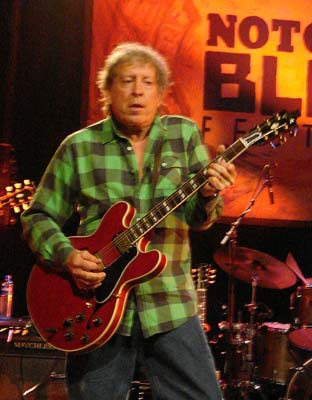
Элвин Бишоп (Mr.Green) - известное имя в блюзе, однако, он приехал не за тем, чтобы этим обстоятельством воспользоваться. Выступив продюссером, Бишоп собрал клевую большую группу человек на семь, в том числе, из молодых музыкантов, и сам очень постарался сыграть в ней достойную роль на гитаре. Мне очень понравились аранжировки и подбор песен. Бишоп с компанией явно потрудились, чтобы доставить удовольствие музыкой сегодня, а не напомнить о том, с кем и что хедлайнер играл когда-то, этой темы не было вообще.Сам Элвин Бишоп, как говорят, немного странный. Он это знает и не выходит из образа фрика. Еще он - хороший гитарист с очень выразительной физиономией, выражающей то, что он играет. В паре песен он забывал, что что-то записывал с Баттерфилдом в Чикаго еще в 60-х, и изображал молодежного гитарного героя со всеми трюками. Не менее круто, но не так серьезно, как это делает молодежь.
Приглашенные гости выступали в рамках джема, хоть и играли-пели как умели, т.е. замечательно, но сама группа, наверное, была еще важнее. Гостями были наши знакомые - гитарист Кид Андерсен со своей женой Лизой, которая отлично поет, Джон Немет на вокале и блистательный Финис Тасби - тоже на вокале.
Великолепный гитарист Кирк Флетчер не выступал на фестивале в Нотоддене. В пятницу он играл в Эстонии на Augustibluus вместе с его норвежской группой, которую он использует для всех европейских гастролей. О великолепном концерте Флетчера отписался в Твиттере участник эстонского фестиваля Володя Русинов.
Ночью в субботу я получил sms от гармониста Эйрика Бергене, которого я оставил в Осло 2 дня назад, про то, что он был сегодня на совершенно потрясающем концерте Кирка Флетчера. (?!!!)
- Как ты оказался в Эстонии?!?! - спросил я. - В Эстонии? Кирк Флетчер дал днем концерт в Buckleys в Осло, вечером поехал играть в Хамар, а завтра - уже улетает.
Ну, что можно сказать, я локти кусал, ибо у меня были все возможности сгонять в Осло днем на машине и вернуться в Нотодден. Кто виноват? Виновато, конечно, отсутствие в Норвегии сайта blues.no с расписанием всех блюзовых концертов.
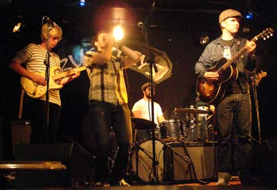
Эйрик после концерта Кирка Флетчера не переставал говорить как заведенный: я так соскучился по музыке и так хочу играть. Эти слова однозначно говорят мне, что пропущенный концерт был исключительным!Толком Эйрик не играл на гармонике 2 года пока был в Москве, выступая изредка на джемах. По возвращении он собрался собрать группу и тратить много времени на музыку.
В воскресенье в 4 дня я пожаловался Эйрику, что приехал в Осло, а ни одного блюзового концерта в городе нет. Эйрик сказал - сейчас мы это исправим, сделал 10 звонков, и к 8 часам мы уже поехали в Buckleys. Там собрались - сам Эйрик, Алекс Петтерсен на барабанах, Пер Тубро на басу, брат Борни - Эйвинд Валберг на гитаре и Йоаким Тиндерхолт еще на одной.
Полчаса до концерта использовали, чтобы вспомнить старые песни и разобрать их с группой. Концерт получился чудесным, хотя в зале в неурочное для Осло время поначалу было не больше 5 человек публики. В какие-то моменты Эйрик переходил на русский из уважения к большинству присутствующих.
Вдохновение сошло на Эйрика и на группу, которая качала о-го-го! Сам я получил огромное удовольствие, в первую очередь, от гармоники и сумасбродной гитары Эйвинда. Он чувствовал себя раскованно и экспериментировал совершенно без каких-то рамок, напоминая моему левому полушарию о Джуниоре Ватсоне, который поступает также "необдуманно", но, при этом, играет, конечно, совершенно по-другому.
В целом фестиваль получился неплохим. Всегда можно понять желание организаторов пригласить артистов с громкими именами, чтобы сделать кассу, и среди них попадаются очень хорошие. Но особый интерес всегда представляет секретная программа, когда в небольшом клубе можно застать неизвестного широко Джуниора Ватсона, начинающего Видара Бюска или Шона Костелло. Одного такого концерта может хватить, чтобы надолго оставить томящие сердце музыкально-романтические воспоминания о фестивале. Хорошо бы, чтобы это случалось почаще!
Федор Романенко, 25.08.2011